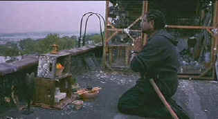

| Ghost
Dog: Way of the Samurai (SE)B+,B+/ |
| Artisan/1999/ |
Jim Jarmusch
makes films that answer the call of his own vision. Ghost Dog:
The Way of the Samurai is no exception. It's probably the most
accessible of his films. Lean, with a clean story line, the
filmmaker chooses a linear style to relate the tale of this
unusual hit man.
 |
|
Ghost
Dog adheres tot he spirit of the samurai. ©Artisan |
An Italian
mob under boss uses Ghost Dog, an anonymous assassin, for
expeditious and successful hits. Mistaken information leads to a
witness to one of the contracts. Ghost Dog decides not to
silence the witness, perhaps a weakness in the plot. This
witness is not just a girl off the street, but the daughter of
the mob family head. With arcane logic directing mob thinking,
the hit man must be taken down for the killing. Loyalty plays a
big part in the action, but poetry, of motion, of thought, are
the most important elements in Jarmusch's screenplay.
Jarmusch relates story with powerful
elegance. The ancient Japanese world tradition of the samurai is
compared to the new world Italian mobsters. Both are
relics of the past and must find a way to adapt to the
present. Though it's an action picture at heart, Ghost
Dog: The Way of the Samurai has many very funny moments,
especially at the expense of the mob figures.
Forest
Whitaker is an actor who combines physical power with gentle
demeanor. He's perfect for Ghost Dog, a character who adheres to
his beliefs with a peaceful knowledge of right and deadly
violent certainty. Whitaker's scenes with young Camille Winbush,
who plays a charming neighborhood girl with a penchant for
reading, are vital in giving depth to his character, and the
strange relationship with Haitian ice cream vendor Raymond,
played with grand energy by Frenchman Isaach
de Bankole, adds another outstanding layer to the film.
The mob characters give a hilarious
troop of supporting actors a chance to polish their tough
guy mannerisms and accents.
John Tormey plays Louie, the man to whom Ghost Dog owes his
allegiance, with Cliff Gorman making the most of Sonny Valerio
and Henry Silva playing boss Vargo with his usual stone face
demeanor.
Jarmusch's look for Ghost Dog: The
Way of the Samurai has an essentially noirish feel, thought
the film is in color. The graceful cinematography contrasts
nicely with the crisp editing. The visual rhythms are complimented
beautifully by Rza's striking score.
Ghost Dog:
The Way of the Samurai is an impressive DVD. The image is
consistently sharp. You can peer into the characters' eyes and
get a sense of what they are thinking. Black are lustrous with
shadow detail revealing every crease in a sports jacket or a
sudden movement in the night. There is some slight edge
enhancement noticeable on high peak day transitions. Color is
stable, with no bleeding from one to another. The Dolby Digital
5:1 sound is outstanding, delivering Rza's nifty score with
tight bass rhythms in tact. Ambient surround information is
distinct, even the night breeze makes itself know in the
surrounds. Included with on the DVD is a half hour special
produced for television featuring interviews with Jarmusch, star
Whitaker, and composer Rza. It's a nice bonus on this excellent
DVD. to
|
|

Selections from the feature archive
include articles on
Akira Kurosawa, Frank
Darabont, Blonde
Bimbos, Hollywood
Street Gangs, or Vietnam:
The Hollywood Pariah, and many more....

Click on the image above for as original view of Akira
Kurosawa's work

Check out these selections from our DVD
Review Archive. New releases are constantly in our face, but catalog
gems should not be forgotten.

 Direct
from the corridors of the Home
Theater Forum, Home Theater Talk is
the newest place on the Net to
discuss everything home theater.
Friendly atmosphere and
knowledgeable folks are the secret
ingredients. Direct
from the corridors of the Home
Theater Forum, Home Theater Talk is
the newest place on the Net to
discuss everything home theater.
Friendly atmosphere and
knowledgeable folks are the secret
ingredients.
 
The Big Combo
has style to spare in reviewing films and producing feature
articles. Check out their special "Lingo" section.

News, information, features about
current films in theaters and in the pipeline. Easy to use
interface.

DVD links, information about Web specials, news, Site
reviews.

The
Movie Poster Archive include extensive poster images from the
films of stars like Susan Hayward, Kirk Douglas, Katharine
Hepburn and many more. Our featured star is
James
Stewart
|